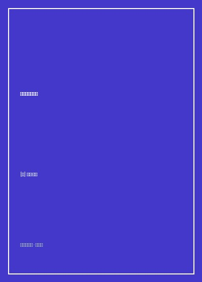

《复杂生命的起源》

总体观点
生命并非单纯依赖DNA代码的自我复制，其核心引擎是跨膜质子电位构成的化学渗透机制。在深海碱性热液喷口处，天然存在的质子浓度差为原核生物的诞生提供了最初动力，使得能量代谢成为界定生命可能性的第一法则。
单细胞生物在地球上前20亿年维持着简单的原核结构，受限于表面积与体积比的能量诅咒，无法扩展基因组；唯有古菌吞噬细菌引发的罕见内共生事件，让线粒体前身成为细胞内的独立供能站，才彻底打破了能量瓶颈，造就了真核生物的暴发。
复杂生命在获得巨大形态多样性的同时，也必须承担不可避免的生化代价。为了协调细胞核与线粒体基因组的供能匹配，生命演化出了两性繁殖、细胞凋亡与衰老机制，将个体的死亡铸造为复杂物种生存繁衍的必要秩序。
核心观点
-
1. 能量是演化的绝对瓶颈
传统演化论侧重信息基因的自然选择，却忽视了维持和表达一个基因组需要耗费的巨大能量。原核生物因为只能在细胞外膜上制造质子梯度，体积变大时单位体积的供能急剧衰竭，导致细菌永远无法单凭自身突变演化出复杂身体。
原核生物的基因组大小普遍停留在数兆碱基对无法突破，一旦合成额外蛋白质，能量消耗就会超过呼吸链负载，将生物锁死在微米级尺度。 -
2. 内共生是一生一次的演化奇迹
从原核到真核的跃迁在地球数十亿年历史中仅发生过一次。一个古菌宿主偶然吞入了一个阿尔法变形菌，且双方未发生消化与排斥，使共生体演化为线粒体，让真核祖先获得的可用能量瞬间暴增数十万倍。
通过剥离绝大部分基因仅保留核心呼吸链编码，数千个线粒体在同一个真核细胞内同时工作，使真核细胞支持高达数万个复杂新基因的表达。 -
3. 核膜的诞生源于抵御内含子寄生
细胞核膜的出现不是为了保护基因，而是共生初期线粒体祖先大量转座子基因碎片入侵宿主基因组时的应急隔离墙。核膜延缓了转录后mRNA接触核糖体的速度，给RNA剪接留出了纠错窗口。
如果没有核膜在空间上隔开转录与翻译，未完成内含子剪接的错误mRNA就会直接被翻译出有毒短肽链，引发致命的细胞崩解。 -
4. 两性分化是为了平息基因冲突
为什么复杂生命几乎普遍采用两性生殖而非多性或无性？单亲遗传（母系遗传线粒体）避免了来自两个亲本的异源线粒体在细胞质内发生恶性竞争与生化内讧，保障了呼吸链复合体的极度纯净。
在杂交物种中，若父系线粒体未能被卵细胞完全降解并发生泄漏，子代往往表现出严重的线粒体脑肌病和受精卵发育停滞。 -
5. 衰老与凋亡是复杂生命不可避免的代价
线粒体氧化磷酸化不可避免地泄漏活性氧（ROS）自由基，破坏周围的线粒体DNA。细胞凋亡程序的演化，本质上是多细胞机体在个体线粒体失灵时牺牲局部细胞以维护整体生存的严密防火墙。
神经元与心肌细胞终生不再分裂，其线粒体随年岁累积突变导致电子泄漏加剧，正是人类随年龄增长退行性病变高发的能量生物学根源。
全书结构
-
序言 质子动力与生物学黑洞
抛出生命演化史上的核心空白：为什么地球生命在前二十亿年停滞于原核形态，生命化学的能量本质究竟是什么。
对比米切尔提出化学渗透假说时遭受的学界嘲讽，揭示生物跨膜电位对生命维系的重要意义。 -
第1章 生命是什么？
从薛定谔的物理学之问延伸至热力学与耗散结构，论证生命的界限在于维持一个远离平衡态的跨膜质子浓度差。
分析深海热液喷口处的蛇纹石化作用与微孔结构，展示无机矿物薄膜如何预演了细胞膜的原始雏形。 -
第2章 能量与演化
详细解析呼吸链上的质子泵与ATP合酶机制，计算细菌在扩大尺寸时面临的几何能量坍塌。
大肠杆菌虽然基因突变率极高，但受外膜能量产出上限死死锁闭，数万代人工繁育实验从未产生复杂多细胞构型。 -
第3章 演化的飞跃
还原古菌与细菌内共生的历史现场，解析线粒体前身如何剥离非核心基因退化为专职微型发电厂。
分析阿斯加德古菌（Asgard archaea）基因组中的真核样骨架特征，坐实真核祖先的嵌合起源路径。 -
第4章 细胞核的起源
剖析内共生产生的基因组震荡，解释内含子侵入、剪接体演化与核膜形成的因果链条。
原核生物边转录边翻译的高效机制在面对大量II型内含子插入时变成致命弱点，迫使真核祖先必须筑起核被膜隔离带。 -
第5章 复杂生命的代价
论证为什么线粒体必须保留自己的极小基因组，揭示呼吸链必须在局部根据氧化还原状态进行实时电位调控。
如果将线粒体编码的最后十几个核心疏水蛋白基因全部迁移到细胞核，跨长距离运输就会发生堵塞引发能量猝死。 -
第6章 性的力量
探讨两性繁殖演化的生物能学动力，分析减数分裂重组如何修复母系线粒体与细胞核基因之间的微观配合失调。
对比无性生殖物种因穆勒棘轮累积有害突变最终走向绝灭，阐明有性重组对维持核质生化兼容性的决定性作用。 -
第7章 死亡与长寿
探讨衰老、癌症与自由基信号传导机制，阐明细胞凋亡在维护多细胞生物能量完整性中的核心防御功能。
裸鼹鼠与雀鸟通过极为致密的线粒体膜结构抑制电子泄漏，换取了远超同体量哺乳动物的惊人寿命。 -
后记 深邃的生命史
站在地球数十亿年地质与宇宙演化的宏阔尺度上，总结以能量为基石的生命演化全新世界观。
展望寻找地外生命时应重点探测天体的质子梯度环境与碱性热液活动，而非单纯寻找液态水。